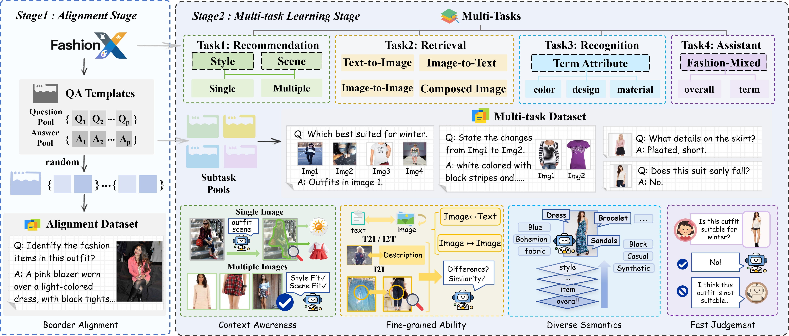
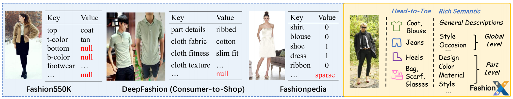
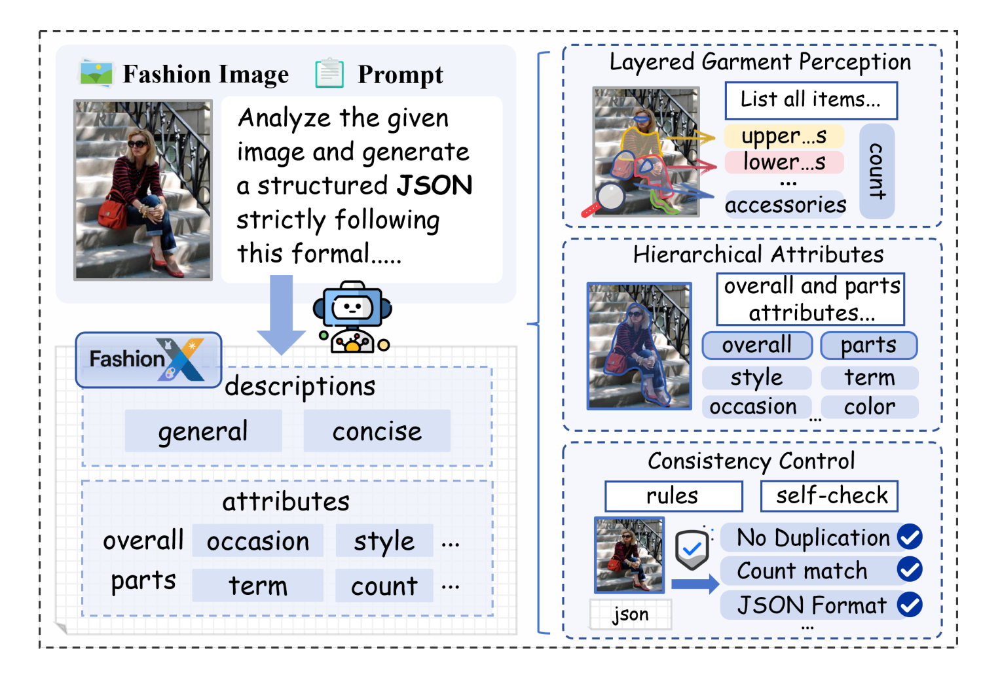
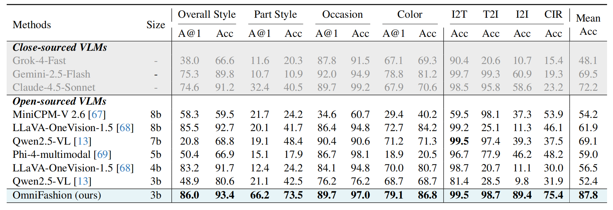

Towards Generalist Fashion Intelligence via Multi-Task Vision-Language Learning
Fashion intelligence spans multiple tasks, retrieval, recommendation, recognition, and dialogue, yet remains hindered by fragmented supervision and incomplete fashion annotations. These limitations jointly restrict the formation of consistent visual-semantic structures, preventing recent vision-language models (VLMs) from serving as a generalist fashion brain that unifies understanding and reasoning across tasks. Therefore, we construct FashionX, a million-scale dataset that exhaustively annotates visible fashion items within an outfit and organizes attributes from global to part-level. Built upon this foundation, we propose OmniFashion, a unified vision-language framework that bridges diverse fashion tasks under a unified fashion dialogue paradigm, enabling both multi-task reasoning and interactive dialogue. Experiments on multi-subtasks and retrieval benchmarks show that OmniFashion achieves strong task-level accuracy and cross-task generalization, highlighting its offering of a scalable path toward universal, dialogue-oriented fashion intelligence.




Comparison with the SOTA methods across eight fashion dialogue subtasks, including overall style, part style, occasion, color recognition, and four retrieval dialogue settings (I2T, T2I, I2I, CIR). The table reports both A@1 and Acc metrics. OmniFashion shows consistently strong performance across all subtasks and achieves the highest mean accuracy among the open- and close-source models.